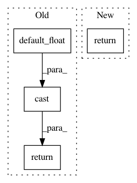

9961eabcc614e6cf883232d4e6fca0131dd0b492,unsorted_tests/test_quadrature.py,,cast,#Any#,36
Before Change
def var2(): return np.array([4.0, 4.2])
def cast(x):
return tf.cast(np.asarray(x), dtype=gpflow.default_float())
def test_diagquad_1d(session_tf, mu1, var1):
quad = gpflow.quadrature.ndiagquad(
After Change
def cast(x):
return x
// return tf.cast(np.asarray(x), dtype=default_float())
@pytest.mark.parametrize("mu", [np.array([1.0, 1.3])])
In pattern: SUPERPATTERN
Frequency: 3
Non-data size: 4
Instances
Project Name: GPflow/GPflow
Commit Name: 9961eabcc614e6cf883232d4e6fca0131dd0b492
Time: 2019-03-18
Author: sergio.diaz@prowler.io
File Name: unsorted_tests/test_quadrature.py
Class Name:
Method Name: cast
Project Name: GPflow/GPflow
Commit Name: bd1e9c04b48dd5ccca9619d5eaa2595a358bdb08
Time: 2020-01-31
Author: st--@users.noreply.github.com
File Name: gpflow/kernels/misc.py
Class Name: ArcCosine
Method Name: K_diag
Project Name: GPflow/GPflow
Commit Name: 516f97c543f0816677fd00ec24b47f31f2618f67
Time: 2020-03-16
Author: st--@users.noreply.github.com
File Name: gpflow/kernels/convolutional.py
Class Name: Convolutional
Method Name: get_patches